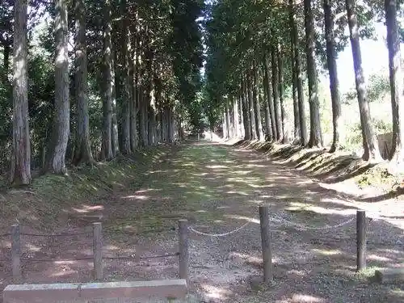
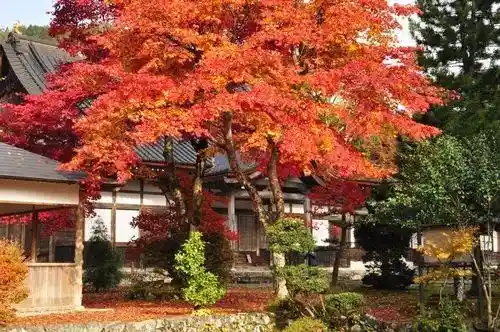

Hikoshi O Goryo
Takashima, Shiga · Official / source link

Tochigi Cherry Blossoms
Takashima, Shiga · Official / source link
Nishie Tera
Takashima, Shiga · 0740-22-0637 · Official / source link
Kyo Hijiri Tera (Ashikaga Garden)
Takashima, Shiga · 0740-38-2103 · Official / source link

Maki no Tsuchi Ni Manabu Sato Kenshu Center
Takashima, Shiga · 0740-27-1131 · Official / source link
Sakana Osamu Mizumi Sato Iori
Takashima, Shiga · 0740-28-1011 · Official / source link
Toju Shrine
Takashima, Shiga · Official / source link
Maki no Highlands Guraundo Gorufu Ba
Takashima, Shiga · 0740-27-0936 · Official / source link
Gyokusen Tera (Takashima)
Takashima, Shiga · 0740-32-0791 · Official / source link
Toju no Ribun Ka Geijutsu Hall
Takashima, Shiga · 0740-32-2461 · Official / source link
Yama Village Miyako City Koryu Kan Genryu no Eki (Sankirai)
Takashima, Shiga · Official / source link
Takashima Maki no Bussan Hall
Takashima, Shiga · 0740-20-1361 · Official / source link
Yoshitsune no Kakure Iwa
Takashima, Shiga · Official / source link
Hatake no Tanada
Takashima, Shiga · 0740-36-1121 · Official / source link
Han Katsura Do Unpei Fude
Takashima, Shiga · 0740-32-0236 · Official / source link
Zuisetsu In (Kondo Shigezo no Haka)
Takashima, Shiga · Official / source link
Imazu Minato (Kankosen no Riba)
Takashima, Shiga · 0740-22-1747 · Official / source link
Kosai no Matsubayashi
Takashima, Shiga · Official / source link
Biwa Galaxy
Takashima, Shiga · 0740-20-5760 · Official / source link
Yugengaisha Iwasa Shoten
Takashima, Shiga · 0740-32-0020 · Official / source link
Hakodate Sanroku no Soba Hatake
Takashima, Shiga · Official / source link
Shirahige Shrine
Takashima, Shiga · 0740-36-1555 · Official / source link
Hase Tera
Takashima, Shiga · 0740-33-7101 · Official / source link
Ohana Resort
Takashima, Shiga · 0740-33-7101 · Official / source link
Imazu Kirisutokyo Hall
Takashima, Shiga · Official / source link
Laughing dog's villa
Takashima, Shiga · Official / source link
Maki no Pikku Land Guraundogorufukosu
Takashima, Shiga · 0740-27-1811 · Official / source link
Roku Tsu Yazaki Hama Oto Campground
Takashima, Shiga · Official / source link
Rashiinuhomu Hari Ko
Takashima, Shiga · Official / source link
Kyu Imazu Yubinkyoku
Takashima, Shiga · 0740-22-0981 · Official / source link
Chuo Bunsuirei Takashima Toreiru
Takashima, Shiga · 0740-20-7450 · Official / source link
Dai Yo (Yawaro Usoku)
Takashima, Shiga · 0740-22-0557 · Official / source link
Toju Shoin Yoshitomo Kan
Takashima, Shiga · 0740-32-4156 · Official / source link
Shirahama So Oto Campground
Takashima, Shiga · 0740-32-4333 · Official / source link
Tomo Sakae Toju Kaido Main Shop
Takashima, Shiga · Official / source link
Biwako Shuko no Uta Museum
Takashima, Shiga · 0740-22-2108 · Official / source link
Maki no Highlands Onsen Sarasa
Takashima, Shiga · 0740-27-8126 · Official / source link
Takara Ranch no Yakiniku Takara Tei Shiboritate Workshop (Ajiwa I Kan)
Takashima, Shiga · 0740-38-2729 · Official / source link
Taisanji Kazabana no Oka
Takashima, Shiga · 0740-32-2315 · Official / source link
Shiriuchi Kawa Saikuringurodo
Takashima, Shiga · Official / source link
Takashima Birejji
Takashima, Shiga · Official / source link
Takarabune Onsen Famirii Campground
Takashima, Shiga · 0740-32-1293 · Official / source link
Akasaka Yama
Takashima, Shiga · 0740-27-0936 · Official / source link
Sora no Ne Kinokuniya
Takashima, Shiga · 0740-32-3750 · Official / source link
Ukawa Shiju Hachi Karada Sekibutsu Gun
Takashima, Shiga · 0740-33-7101 · Official / source link
Hachi Tsu Fuchi Falls
Takashima, Shiga · 0740-25-8040 · Official / source link
Shimizu Yamashiro Yakatato
Takashima, Shiga · Official / source link
Shin'asahi Kogan no Fukei
Takashima, Shiga · Official / source link
no Urushi Gunsei Chi
Takashima, Shiga · Official / source link
Kakitsubata Gunsei Chi
Takashima, Shiga · Official / source link
Shimizu Cherry Blossoms
Takashima, Shiga · Official / source link
Biwako Hakodate Yama
Takashima, Shiga · Official / source link
Tochigi Gorufu Kurabu
Takashima, Shiga · 0740-38-2201 · Official / source link
Ginga Puru Resort
Takashima, Shiga · 0740-20-5760 · Official / source link
Choshigataki
Takashima, Shiga · 0740-27-0936 · Official / source link
Maki no Rinkan Supotsu Center
Takashima, Shiga · 0740-22-9090 · Official / source link
Sho Iriya no Unkai Autumn Leaves
Takashima, Shiga · Official / source link
Roadside Station Toju no Sato Adogawa
Takashima, Shiga · 0740-32-8460 · Official / source link
Nami Kikui Do Tsubame (Maki no Pikku Land)
Takashima, Shiga · 070-8553-2443 · Official / source link
Daikichi Shoten KK
Takashima, Shiga · 0740-32-0001 · Official / source link
Gyarakushiisutadasuto
Takashima, Shiga · 0740-20-5760 · Official / source link
Hebitanigamine
Takashima, Shiga · Official / source link
Gyarakushiiguranpingudoggupuremiamu
Takashima, Shiga · 0740-20-5760 · Official / source link
Emi Kotobukiso
Takashima, Shiga · 0740-36-0012 · Official / source link
Kaizu Osaki
Takashima, Shiga · Official / source link
Experience Koryu Center Yume no
Takashima, Shiga · 0740-22-5556 · Official / source link
Kabata Kan
Takashima, Shiga · 0740-25-3790 · Official / source link
JR Maki no Eki
Takashima, Shiga · 0570-00-2486 · Official / source link
Takarabune Onsen Yumoto Kotobuki
Takashima, Shiga · 0740-32-1293 · Official / source link
Omizo Camp Office Somon
Takashima, Shiga · 0740-36-2011 · Official / source link
Birejji 1 Gokan Rosoku Town Kyandoru Workshop
Takashima, Shiga · 0740-36-1266 · Official / source link
Den'en Biyori
Takashima, Shiga · 070-4336-5560 · Official / source link
Mio Shrine
Takashima, Shiga · 0740-37-0316 · Official / source link
Sakanami Tera
Takashima, Shiga · 0740-22-0338 · Official / source link
Taiko Hiko Shrine
Takashima, Shiga · 0740-25-2200 · Official / source link
Kaizu Ten Shrine
Takashima, Shiga · 0740-28-0051 · Official / source link
Omi Mizumi (Shojo Mizumi)
Takashima, Shiga · Official / source link
Maki no Sanii Beach Takagi Hama Oto Campground
Takashima, Shiga · 0740-28-1206 · Official / source link
Fukui Yahei Shoten
Takashima, Shiga · 0740-36-1011 · Official / source link
Airisshu Park
Takashima, Shiga · 0740-36-0219 · Official / source link
Wakamiya Shrine (Takashima)
Takashima, Shiga · Official / source link
Biwako Shuko no Uta Kinenhi
Takashima, Shiga · Official / source link
Nama Sugi no Buna Genseirin
Takashima, Shiga · Official / source link
Shiro Hige Shokudo
Takashima, Shiga · Official / source link
Tanaka Shrine
Takashima, Shiga · 0740-32-1594 · Official / source link
Biwakomarinsupotsuoto Campground
Takashima, Shiga · 0740-32-3777 · Official / source link
Maki no Sanii Beach Shiriuchi Hama Oto Campground
Takashima, Shiga · 0740-27-0325 · Official / source link
Tochigi Kogawa Keiryu Center
Takashima, Shiga · 0740-38-5050 · Official / source link
O Shokuji Tokoro Sarasa Iori
Takashima, Shiga · 0740-27-0936 · Official / source link
Gariba Seishonen Ryoko Village
Takashima, Shiga · 0740-37-0744 · Official / source link
JR Omiimazueki
Takashima, Shiga · 0570-00-2486 · Official / source link
Wara Sono Shrine
Takashima, Shiga · 0740-25-2853 · Official / source link
Gu Land - Mu Shiga Takashima
Takashima, Shiga · 0740-20-5760 · Official / source link
Hodo In
Takashima, Shiga · Official / source link
Adogawa Kako no Wetland
Takashima, Shiga · Official / source link
Green Park Omoide Forest (Kutsuki Onsen Tenku)
Takashima, Shiga · 0740-38-2770 · Official / source link
Zazenso Gunsei Chi (Takashima)
Takashima, Shiga · Official / source link
SHIRAHIGE BEACH (Shiro Hige Beach)
Takashima, Shiga · 0740-36-1248 · Official / source link
Hosoifukuromo no
Takashima, Shiga · 0740-32-2434 · Official / source link
Imazu Vorizu Museum
Takashima, Shiga · 0740-22-0981 · Official / source link
Ekai Numa
Takashima, Shiga · Official / source link
Otomegaike
Takashima, Shiga · Official / source link
Hari Ko Namamizu no Sato Kabata
Takashima, Shiga · 090-3168-8400 · Official / source link
Imazu Takeo Shima Koro (Biwakokisen)
Takashima, Shiga · 0740-22-1747 · Official / source link
Kawashima Shuzo
Takashima, Shiga · 0740-25-2202 · Official / source link
Maki no Highlands Cherry Blossoms
Takashima, Shiga · 0740-27-0936 · Official / source link
Higambana Gunsei Chi (Katsurahama)
Takashima, Shiga · Official / source link
Biwa Mizumi Seishonen no Ie +Active Biwako Center
Takashima, Shiga · 0740-36-1108 · Official / source link
Nakae Toju Takashima Museum
Takashima, Shiga · 0740-32-0330 · Official / source link
Amida Yama
Takashima, Shiga · Official / source link
Furuya Mohe Shoten
Takashima, Shiga · 0740-22-2043 · Official / source link
A Shitsu Ya Shrine Gyo Ka Tenmangu Shrine
Takashima, Shiga · 0740-22-2379 · Official / source link
Mori no Kakure Yado Shiipu
Takashima, Shiga · 0740-22-5505 · Official / source link
Osaki Tera (Osaki Kannon)
Takashima, Shiga · 0740-28-1215 · Official / source link
Gyokurin Tera (Toju Hakasho)
Takashima, Shiga · 0740-32-0556 · Official / source link
Unagi Sai Do
Takashima, Shiga · Official / source link
Seiden Tera (Daikoku Ten)
Takashima, Shiga · 0740-25-2241 · Official / source link
Kattori Yana
Takashima, Shiga · Official / source link
Maki no Highlands Campground
Takashima, Shiga · 0740-27-0936 · Official / source link
Takashima Imazu Sogo Sports Park
Takashima, Shiga · Official / source link
Kissa Yogashi Taimufoteii
Takashima, Shiga · 0740-20-6529 · Official / source link
Oizumi Tera
Takashima, Shiga · 0740-25-5411 · Official / source link
Hagi no Hama
Takashima, Shiga · Official / source link
Omizo Castle Town
Takashima, Shiga · Official / source link
Takashima Tami Hall
Takashima, Shiga · 0740-22-1764 · Official / source link
Garibafisshingu Garden
Takashima, Shiga · 090-1448-0609 · Official / source link
Tochigi Ski Area
Takashima, Shiga · 0740-38-2323 · Official / source link
Imazu Hama Suiei Ba
Takashima, Shiga · 0740-33-7101 · Official / source link
Hioki Shrine
Takashima, Shiga · 0740-22-0161 · Official / source link
Seiyu Main Shop
Takashima, Shiga · 0120-39-2105 · Official / source link
Ji Ji Kine Shrine
Takashima, Shiga · Official / source link
Seifu Toroku Ryokan Shirahama So
Takashima, Shiga · 0740-32-0451 · Official / source link
Sakura Kaido Oto Campground
Takashima, Shiga · 0740-25-7111 · Official / source link
Shin'asahi Gym
Takashima, Shiga · Official / source link
Maki no Shiratani Onsen Hachioji So
Takashima, Shiga · 0740-27-0085 · Official / source link
Kanko Yoro Ranch Metasekoia to Uma Forest
Takashima, Shiga · 0740-20-9060 · Official / source link
Fisshingu Park Takashima no Izumi
Takashima, Shiga · 0740-20-7448 · Official / source link
Nyu Shirahama Oto Campground
Takashima, Shiga · 090-6918-0675 · Official / source link
Suzuki Sensu Mise
Takashima, Shiga · 0740-32-0351 · Official / source link
Nami Ji Nuno Shrine
Takashima, Shiga · Official / source link
Gan Yoshi Tera
Takashima, Shiga · 0740-28-0586 · Official / source link
Biwa Mizumi Buruwarii
Takashima, Shiga · Official / source link
Omi Su YK
Takashima, Shiga · 0740-36-0018 · Official / source link
JR Omi Takashima Eki
Takashima, Shiga · 0570-00-2486 · Official / source link
Adogawa
Takashima, Shiga · Official / source link
Zerogurabiteii
Takashima, Shiga · 075-702-9330 · Official / source link
Yomei Sono
Takashima, Shiga · 0740-32-0330 · Official / source link
Fusha Kaido Cherry Blossoms
Takashima, Shiga · Official / source link
Kawazakana no Yoshiume
Takashima, Shiga · 0740-32-2374 · Official / source link
Tochigi Oto Campground
Takashima, Shiga · 0740-38-2770 · Official / source link
Toju Shoin
Takashima, Shiga · 0740-32-4156 · Official / source link
400-Year Funa Hisashi Shi So Honke Kita Hin Shinise
Takashima, Shiga · 0740-20-2042 · Official / source link
Yaki Imo Suiitsu
Takashima, Shiga · 050-8881-0258 · Official / source link
Namiki Kafe Metasekoia
Takashima, Shiga · 0740-27-1811 · Official / source link
Tanaka Castle Ruins
Takashima, Shiga · Official / source link
Roadside Station Shin'asahi Fusha Village
Takashima, Shiga · 0740-25-8040 · Official / source link
Imazu Samburijji Hotel
Takashima, Shiga · 0740-22-6666 · Official / source link
Hari Ko no Nkiifamu
Takashima, Shiga · 0740-20-5067 · Official / source link
Tsuno Shrine
Takashima, Shiga · 0740-22-1035 · Official / source link
Shi Takazakura no Hi
Takashima, Shiga · Official / source link
Uehara Shuzo
Takashima, Shiga · 0740-25-2075 · Official / source link
Roadside Station Kutsuki Shinpon Jin
Takashima, Shiga · 0740-38-2398 · Official / source link
Omi Do
Takashima, Shiga · 0740-36-0218 · Official / source link
Omizo Castle Ruins
Takashima, Shiga · Official / source link
Maki no Nogyo Koen Maki no Pikku Land
Takashima, Shiga · 0740-27-1811 · Official / source link
Tsune Sakae Tera
Takashima, Shiga · 0740-28-0651 · Official / source link
Yugengaisha Suita Sensu
Takashima, Shiga · 0740-32-1345 · Official / source link
Hakodate Yama Ski Area
Takashima, Shiga · 0740-22-2486 · Official / source link
Maruhachi Hyakkaten
Takashima, Shiga · 0740-38-3711 · Official / source link
Nishiomi Shichifukujin
Takashima, Shiga · 0740-36-1555 · Official / source link
Maki no Highlands Famirii Ski Area
Takashima, Shiga · 0740-27-0936 · Official / source link
Shintsu Garasu Seisakusho
Takashima, Shiga · 0740-33-7212 · Official / source link
Kamo Inariyama Burial Mound
Takashima, Shiga · 0740-36-1553 · Official / source link
Metasekoia Namiki
Takashima, Shiga · 0740-33-7101 · Official / source link
Shiga Prefectural Biwa Mizumi Kodomo no Kuni
Takashima, Shiga · 0740-34-1392 · Official / source link
STAGEX Takashima
Takashima, Shiga · 0740-25-8212 · Official / source link
Takashima Marugoto Hyakkaten
Takashima, Shiga · 0740-33-7103 · Official / source link
Kaizu no Streetscape
Takashima, Shiga · Official / source link
Adomiiru Resort
Takashima, Shiga · Official / source link
Shin'asahi Shinrin Supotsu Park
Takashima, Shiga · 0740-25-3927 · Official / source link
Roadside Station Maki no Tsui Saka Toge
Takashima, Shiga · 0740-28-8081 · Official / source link
Shigaken Sensu Kogyo Kyodokumiai
Takashima, Shiga · 0740-32-1580 · Official / source link
Forest Park Kutsuki Forest
Takashima, Shiga · 0740-38-8099 · Official / source link
Takashima Yakusho
Takashima, Shiga · 0740-25-8000 · Official / source link